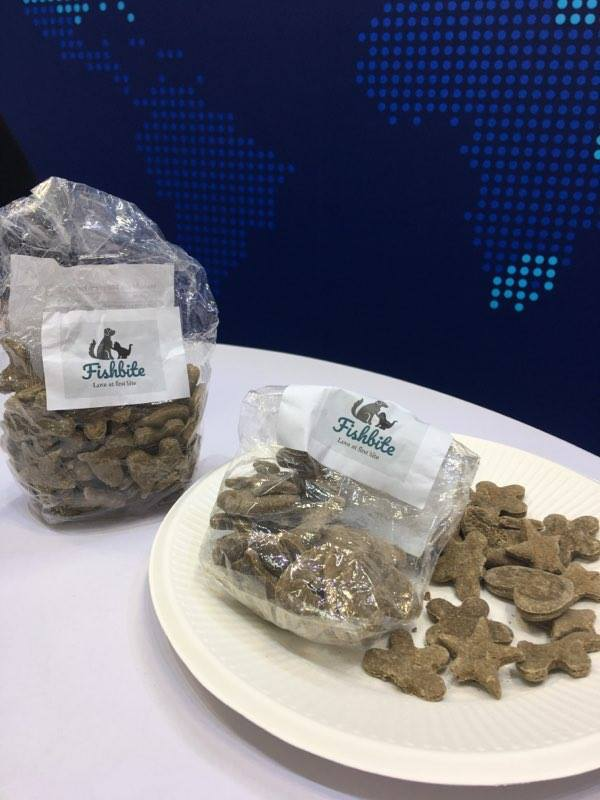
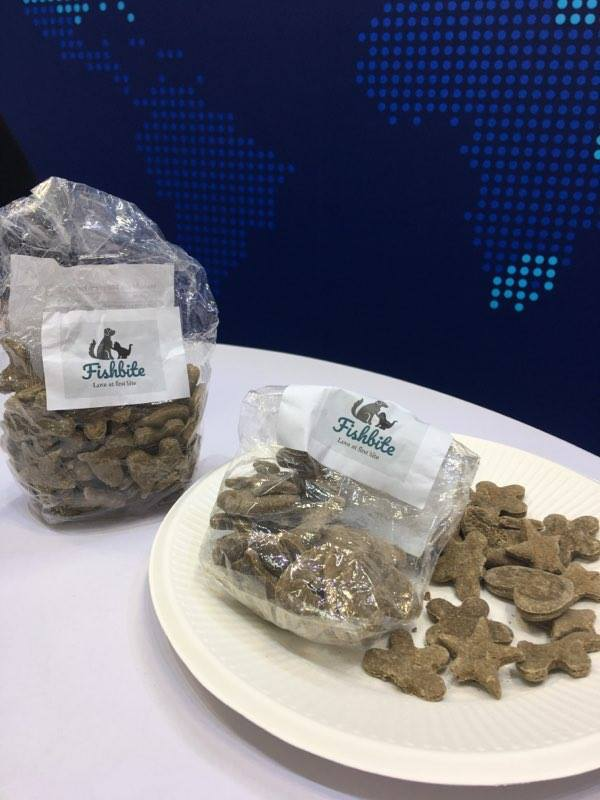

Vi er en ungdomsbedrift fra Nordhal Grieg videregående skole. Når vi fikk i oppgave å lage ungdomsbedrift i entreprenørskapsskolen var vi litt usikre på hva slags produkt eller tjeneste vi ville tilby. Vi fant ut at onkelen til Ida hadde tilgang til store mengder fiskemel ettersom at han jobber med det. Vi startet en idemyldring rundt dette og prøvde å komme opp med et produkt som lagd av fiskemel. Vi fant fort ut at mennesker ville nok ikke ha noe med dette produktet å gjøre siden det stinket slik som det gjorde. Men vi tenkte at hunder og katter kanskje ville like det. Så vi bestemte oss for å lage en liten porsjon for å teste det. Og dette viste seg å være en stor succes. Så vi hadde nå bestemt oss for hva vårt produkt skulle være. Dyresnack.
 
